STEERING ACTUATOR > INSTALLATION |
| 1. HANDLING PRECAUTIONS FOR STEERING ACTUATOR ASSEMBLY |
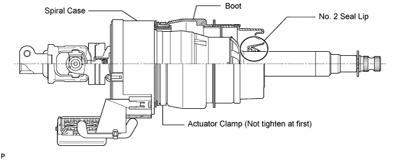
| 2. INSTALL STEERING ACTUATOR ASSEMBLY |
Make sure that the power steering link assembly is centered.
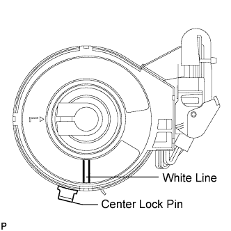 |
Install the steering actuator assembly.
If installing a new steering actuator assembly:
Install the steering actuator assembly with the white paint on the upper surface of the spiral case facing down.
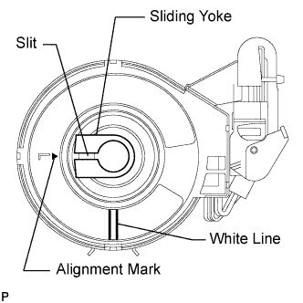 |
If reinstalling the removed steering actuator assembly:
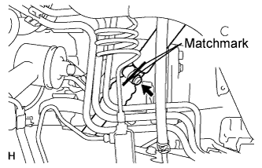 |
Align the matchmarks on the No. 2 steering intermediate shaft and steering actuator.
Install the bolt.
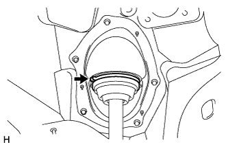 |
Using needle nose pliers, lock the clamp to the steering column hole cover to install it.
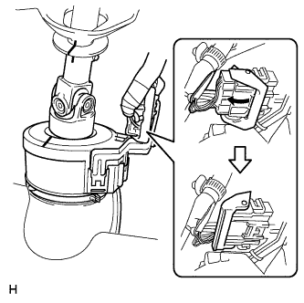 |
Move the lock in the direction of the arrow and connect the steering actuator connector.
Connect the connector.
| 3. INSTALL STEERING COLUMN ASSEMBLY |
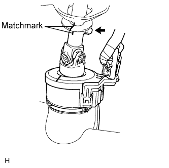 |
Align the matchmarks on the steering actuator and steering column.
Install the bolt.
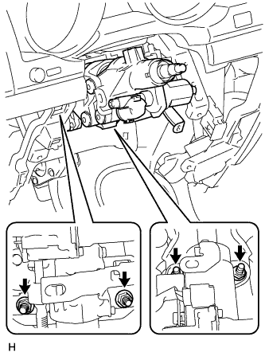 |
Install the steering column with the 4 nuts.
| 4. INSTALL NO. 3 AIR DUCT SUB-ASSEMBLY |
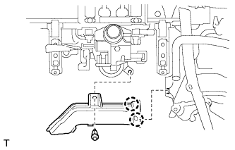 |
Attach the 2 claws to install the duct.
Install the clip.
| 5. CONNECT WIRE HARNESS PROTECTOR AND WIRE HARNESS |
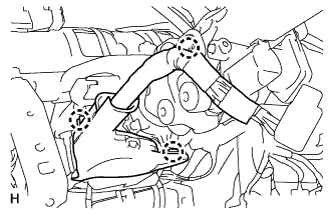 |
Attach the 3 claws to connect the wire harness protector and wire harness.
| 6. INSTALL DRIVER SIDE KNEE AIRBAG ASSEMBLY (w/ Driver Side Knee Airbag) |
 |
Connect the connector.
Install the driver side knee airbag with the 5 bolts.
| 7. INSTALL LOWER INSTRUMENT PANEL SUB-ASSEMBLY (w/o Driver Side Knee Airbag) |
 |
Attach the 4 claws and connect the DLC3.
Install the instrument panel with the 5 bolts.
| 8. INSTALL NO. 1 SWITCH HOLE BASE |
 |
Connect the connectors.
Attach the 4 claws to install the switch hole base.
| 9. INSTALL LOWER NO. 1 INSTRUMENT PANEL FINISH PANEL |
 |
Connect the connectors.
Attach the 2 claws to install the sensor.
 |
Attach the 2 claws to connect the 2 control cables.
 |
Attach the 14 claws to install the finish panel.
Install the 2 bolts.
 |
Attach the 2 claws to close the hole cover.
| 10. INSTALL COWL SIDE TRIM BOARD LH |
 |
Attach the 2 clips to install the trim board.
Install the cap nut.
| 11. INSTALL NO. 1 INSTRUMENT PANEL UNDER COVER SUB-ASSEMBLY (w/ Floor Under Cover) |
 |
Connect the connectors.
Attach the 3 claws to install the under cover.
Install the 2 screws.
| 12. INSTALL FRONT DOOR SCUFF PLATE LH |
 |
Attach the 7 claws and 4 clips to install the scuff plate.
| 13. INSTALL INSTRUMENT CLUSTER FINISH PANEL SUB-ASSEMBLY (w/o Multi-information Display) |
 |
Attach the 9 claws to install the finish panel.
| 14. INSTALL INSTRUMENT CLUSTER FINISH PANEL SUB-ASSEMBLY (w/ Multi-information Display) |
 |
Connect the connectors.
Install the combination meter with the 4 screws.
| 15. INSTALL NO. 2 INSTRUMENT CLUSTER FINISH PANEL GARNISH |
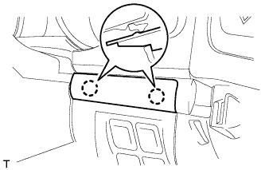 |
Attach the 2 claws to install the panel garnish.
| 16. INSTALL NO. 1 INSTRUMENT CLUSTER FINISH PANEL GARNISH |
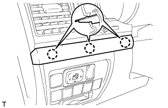 |
Attach the 3 claws to install the panel garnish.
| 17. INSTALL INSTRUMENT SIDE PANEL LH |
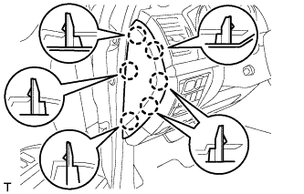 |
Attach the 6 claws to install the side panel.
| 18. INSTALL LOWER INSTRUMENT PANEL PAD SUB-ASSEMBLY LH |
 |
Connect the connectors and 2 clamps.
Attach the 8 claws to install the panel pad.
Install the screw.
Install the clip.
| 19. INSTALL NO. 2 INSTRUMENT PANEL FINISH PANEL CUSHION |
 |
Attach the 7 claws to install the panel cushion.
| 20. INSTALL COMBINATION SWITCH ASSEMBLY WITH SPIRAL CABLE SUB-ASSEMBLY |
 |
Using pliers, grip the claws of the clamp and install the combination signal switch assembly with spiral cable sub-assembly to the steering column assembly with the clamp.
 |
Connect the 5 connectors to the combination switch with spiral cable.
| 21. INSTALL TILT AND TELESCOPIC SWITCH |
 |
Attach the claw to install the switch.
Connect the switch connector.
| 22. INSTALL UPPER STEERING COLUMN COVER |
 |
Attach the claw to install the upper steering column cover.
Attach the 4 clips to the instrument cluster finish panel.
| 23. INSTALL LOWER STEERING COLUMN COVER |
 |
Attach the 2 claws to install the lower steering column cover.
Install the 3 screws.
| 24. INSTALL STEERING WHEEL ASSEMBLY |
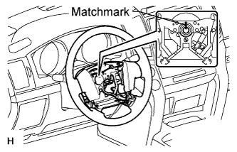 |
Align the matchmarks on the steering wheel assembly and steering main shaft assembly.
Install the steering wheel assembly set nut.
| 25. INSTALL STEERING PAD |
 |
Support the steering pad with one hand.
Connect the 2 connectors to the steering pad.
Connect the horn connector.
Confirm that the circumference groove of the "TORX" screw fits in the screw case, and place the steering pad onto the steering wheel.
Using a T30 "TORX" socket wrench, tighten the 2 screws.
| 26. INSTALL LOWER NO. 2 STEERING WHEEL COVER |
 |
Attach the 2 claws to install the cover.
| 27. INSTALL LOWER NO. 3 STEERING WHEEL COVER |
 |
Attach the 2 claws to install the cover.
| 28. CONNECT CABLE TO NEGATIVE BATTERY TERMINAL |
| 29. INSPECT SRS WARNING LIGHT |
Inspect the SRS warning light (Click here).
| 30. PERFORM VARIABLE GEAR RATIO STEERING SYSTEM CALIBRATION |
Perform variable gear ratio steering system calibration (Click here).